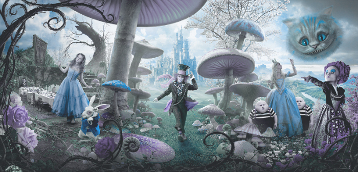

Так так, что у нас тут, еще один сайт посвященной всякой там психологии, эзотерике и прочему мракобесию. Изначально сайт создавался для личного пользования и раз он дорос до того, что его выложили в интернет - значит, свершилось чудо. Короче, помните, что на этом сайте многое все еще недоприкручено и находится в состоянии постоянного доделывания\переделывания.
Основные темы сайта:
1. Психологические тесты, забавные и не очень, ну, тут все просто.
2. Метафорические Ассоциативные Карты (МАК) - очень интересный метод проработки своих внутренних заморочек. Собственно, эта тема и вдохновила меня на создание данного сайта. Коий изначально задумывался, аки просто удобный инструмент для оголтелого самокопательства с помощью тех самых карт.
3. Составление Психологического Портрета на картах Таро по методу Алиции Хшановской - изначально это все задумывалось как программа для таких рассчетов. Застряло на стадии недоделаности и было добавлено на этот сайт до кучи, вследствие призрачной надежды когда-нибудь доделать. Ага, когда-нибудь... размечтались.
Администрация сайта не несет никакой ответственности за возможный ущерб причиненый психическому здоровью вследствие неправильного использования предоставленых на сайте инструментов. А инструменты, кстати, только с виду такие простые и безобидные. Вот МАК, например, мощнейшее средство (как раз то, что доктор прописал). Так что все на ваш страх и риск. Придерживайтесь рекомендаций, консультируйтесь у личного психолога и будет вам счастье.
Самопознание и саморазвитие - это увлекательное путешествие к себе, так что запасаемся энтузиазмом и вперед! :)

Преамбула
1. Этический кодекс психолога Российского психологического общества составлен в соответствии с Конституцией Российской Федерации, Федеральным законом Российской Федерации No 152 - ФЗ от 27 июля 2006 года «О персональных данных», Уставом Российского психологического общества, Всеобщей декларацией прав человека, Хельсинкской декларацией Всемирной медицинской ассоциации «Этические принципы проведения медицинских исследований с участием людей в качестве субъектов исследования», международной Универсальной декларацией этических принципов для психологов, Этическим метакодексом Европейской федерации психологических ассоциаций.
2. Консультативным и регулирующим органом Российского психологического общества по вопросам профессиональной этики психолога является Этический комитет Российского психологического общества.
3. В настоящем Этическом кодексе термин «Психолог» относится к лицу, имеющему высшее психологическое образование.
4. В настоящем Этическом кодексе термин «Клиент» относится к лицу, группе лиц или организации, которые согласились быть объектом психологических исследований в личных, научных, производственных или социальных интересах или лично обратились к Психологу за психологической помощью.
5. Действие данного Этического кодекса распространяется на все виды деятельности психологов, определенные настоящим Этическим кодексом. Действие данного Этического кодекса распространяется на все формы работы Психолога, в том числе осуществляемые дистанционно или посредством сети Интернет.
6. Профессиональная деятельность психолога характеризуется его особой ответственностью перед клиентами, обществом и психологической наукой, и основана на доверии общества, которое может быть достигнуто только при соблюдении этических принципов профессиональной деятельности и поведения, содержащихся в настоящем Этическом кодексе.
7. Этический кодекс психологов служит: для внутренней регуляции деятельности сообщества психологов; для регуляции отношений психологов с обществом; основой применения санкций при нарушении этических принципов профессиональной деятельности.
I. Этические принципы психолога
Этика работы психолога основывается на общечеловеческих моральных и нравственных ценностях. Идеалы свободного и всестороннего развития личности и ее уважения, сближения людей, создания справедливого, гуманного, процветающего общества являются определяющими для деятельности психолога. Этические принципы и правила работы психолога формулируют условия, при которых сохраняются и упрочиваются его профессионализм, гуманность его действий, уважение людей, с которыми он работает, и при которых усилия психолога приносят реальную пользу.
1. Принцип уважения
Психолог исходит из уважения личного достоинства, прав и свобод человека, провозглашенных и гарантированных Конституцией Российской Федерации и международными документами о правах человека.
Принцип уважения включает:
а) Уважение достоинства, прав и свобод личности
1. Психолог с равным уважением относится к людям вне зависимости от их возраста, пола, сексуальной ориентации, национальности, принадлежности к определенной культуре, этносу и расе, вероисповедания, языка, социально-экономического статуса, физических возможностей и других оснований.
2. Беспристрастность Психолога не допускает предвзятого отношения к Клиенту. Все действия Психолога относительно Клиента должны основываться на данных, полученных научными методами. Субъективное впечатление, которое возникает у Психолога при общении с Клиентом, а также социальное положение Клиента не должны оказывать никакого влияния на выводы и действия Психолога.
3. Психолог избегает деятельности, которая может привести к дискриминации Клиента по любым основаниям.
4. Психологу следует так организовать свою работу, чтобы ни ее процесс, ни ее результаты не наносили вреда здоровью и социальному положению Клиента и связанных с ним лиц.
б) Конфиденциальность
1. Информация, полученная Психологом в процессе работы с Клиентом на основе доверительных отношений, не подлежит намеренному или случайному разглашению вне согласованных условий.
2. Результаты исследования должны быть представлены таким образом, чтобы они не могли скомпрометировать Клиента, Психолога или психологическую науку.
3. Психодиагностические данные студентов, полученные при их обучении, должны рассматриваться конфиденциально. Сведения о Клиентах также должны рассматриваться конфиденциально.
4. Демонстрируя конкретные случаи своей работы, Психолог должен обеспечить защиту достоинства и благополучия Клиента.
5. Психолог не должен отыскивать о Клиенте информацию, которая выходит за рамки профессиональных задач Психолога.
6. Клиент имеет право на консультацию Психолога или работу с ним без присутствия третьих лиц.
7. Неконтролируемое хранение данных, полученных при исследованиях, может нанести вред Клиенту, Психологу и обществу в целом. Порядок обращения с полученными в исследованиях данными и порядок их хранения должны быть жестко регламентированы.
в) Осведомленность и добровольное согласие Клиента
1. Клиент должен быть извещен о цели работы, о применяемых методах и способах использования полученной информации. Работа с Клиентом допускается только после того, как Клиент дал информированное согласие в ней участвовать. В случае, если Клиент не в состоянии сам принимать решение о своем участии в работе, такое решение должно быть принято его законными представителями.
2. Психолог должен сообщать Клиенту обо всех основных шагах или лечебных действиях. В случае стационарного лечения Психолог должен информировать Клиента о возможных рисках и об альтернативных методах лечения, включая непсихологические.
3. Видео- или аудиозаписи консультации или лечения Психолог может делать только после того, как получит согласие на это со стороны Клиента. Это положение распространяется и на телефонные переговоры. Ознакомление третьих лиц с видео-, аудиозаписями консультации и телефонными переговорами Психолог может разрешить только после получения согласия на это со стороны Клиента.
4. Участие в психологических экспериментах и исследованиях должно быть добровольным. Клиент должен быть проинформирован в понятной для него форме о целях, особенностях исследования и возможном риске, дискомфорте или нежелательных последствиях, чтобы он мог самостоятельно принять решение о сотрудничестве с Психологом. Психолог обязан предварительно удостовериться в том, что достоинство и личность Клиента не пострадают. Психолог должен принять все необходимые предосторожности для обеспечения безопасности и благополучия Клиента и сведения к минимуму возможности непредвиденного риска.
5. В тех случаях, когда предварительное исчерпывающее раскрытие информации противоречит задачам проводимого исследования, Психолог должен принять специальные меры предосторожности для обеспечения благополучия испытуемых. В тех случаях, когда это возможно, и при условии, что сообщаемая информация не нанесет вреда Клиенту, все разъяснения должны быть сделаны после окончания эксперимента.
г) Самоопределение Клиента
1. Психолог признает право Клиента на сохранение максимальной автономии и самоопределения, включая общее право вступать в профессиональные отношения с психологом и прекращать их.
2. Клиентом может быть любой человек в случае своей несомненной дееспособности по возрасту, состоянию здоровья, умственному развитию, физической независимости. В случае недостаточной дееспособности человека решение о его сотрудничестве с Психологом принимает лицо, представляющее интересы этого человека по закону.
3. Психолог не должен препятствовать желанию Клиента привлечь для консультации другого психолога (в тех случаях, когда к этому нет юридических противопоказаний).
2. Принцип компетентности
Психолог должен стремиться обеспечивать и поддерживать высокий уровень компетентности в своей работе, а также признавать границы своей компетентности и своего опыта. Психолог должен предоставлять только те услуги и использовать только те методы, которым обучался и в которых имеет опыт.
Принцип компетентности включает:
а) Знание профессиональной этики
1. Психолог должен обладать исчерпывающими знаниями в области профессиональной этики и обязан знать положения настоящего Этического кодекса. В своей работе Психолог должен руководствоваться этическими принципами.
2. Если персонал или студенты выступают в качестве экспериментаторов в проведении психодиагностических процедур, Психолог должен обеспечить, независимо от их собственной ответственности, соответствие совершаемых ими действий профессиональным требованиям.
3. Психолог несет ответственность за соответствие профессионального уровня персонала, которым он руководит, требованиям выполняемой работы и настоящего Этического кодекса.
4. В своих рабочих контактах с представителями других профессий Психолог должен проявлять лояльность, терпимость и готовность помочь.
б) Ограничения профессиональной компетентности
1. Психолог обязан осуществлять практическую деятельность в рамках собственной компетентности, основанной на полученном образовании и опыте.
2. Только Психолог осуществляет непосредственную (анкетирование, интервьюирование, тестирование, электрофизиологическое исследование, психотерапия, тренинг и др.) или опосредованную (биографический метод, метод наблюдения, изучение продуктов деятельности Клиента и др.) работу с Клиентом.
3. Психолог должен владеть методами психодиагностической беседы, наблюдения, психолого-педагогического воздействия на уровне, достаточном, чтобы поддерживать у Клиента чувство симпатии, доверия и удовлетворения от общения с Психологом.
4. Если Клиент болен, то работа с ним допустима только с разрешения врача или согласия других лиц, представляющих интересы Клиента.
в) Ограничения применяемых средств
1. Психолог может применять методики, которые адекватны целям проводимого исследования, возрасту, полу, образованию, состоянию Клиента, условиям эксперимента. Психодиагностические методики, кроме этого, обязательно должны быть стандартизованными, нормализованными, надежными, валидными и адаптированными к контингенту испытуемых.
2. Психолог должен применять методы обработки и интерпретации данных, получившие научное признание. Выбор методов не должен определяться научными пристрастиями Психолога, его общественными увлечениями, личными симпатиями к Клиентам определенного типа, социального положения или профессиональной деятельности.
3. Психологу запрещается представлять в результатах исследования намеренно искаженные первичные данные, заведомо ложную и некорректную информацию. В случае обнаружения Психологом существенной ошибки в своем исследовании после того, как исследование было опубликовано, он должен предпринять все возможные действия по исправлению ошибки и дальнейшему опубликованию исправлений.
г) Профессиональное развитие
1. Психолог должен постоянно повышать уровень своей профессиональной компетентности и свою осведомленность в области этики психологической работы (исследования).
д) Невозможность профессиональной деятельности в определенных условиях
1. Если какие-либо обстоятельства вынуждают Психолога преждевременно прекратить работу с Клиентом и это может отрицательно сказаться на состоянии Клиента, Психолог должен обеспечить продолжение работы с Клиентом.
2. Психолог не должен выполнять свою профессиональную деятельность в случае, когда его способности или суждения находятся под неблагоприятным воздействием
3. Принцип ответственности
Психолог должен помнить о своих профессиональных и научных обязательствах перед своими клиентами, перед профессиональным сообществом и обществом в целом. Психолог должен стремиться избегать причинения вреда, должен нести ответственность за свои действия, а также гарантировать, насколько это возможно, что его услуги не являются злоупотреблением.
Принцип ответственности включает:
а) Основная ответственность
1. Решение Психолога осуществить исследовательский проект или вмешательство предполагает его ответственность за возможные научные и социальные последствия, включая воздействие на лиц, группы и организации, участвующие в исследовании или вмешательстве, а также непрямой эффект, как, например, влияние научной психологии на общественное мнение и на развитие представлений о социальных ценностях.
2. Психолог должен осознавать специфику взаимодействия с Клиентом и вытекающую из этого ответственность. Ответственность особенно велика в случае, если в качестве испытуемых или клиентов выступают лица, страдающие от медикаментозной зависимости, или лица, ограниченные в своих действиях, а также, если программа исследования или вмешательства целенаправленно ограничивает дееспособность Клиента.
3. Если Психолог приходит к заключению, что его действия не приведут к улучшению состояния Клиента или представляют риск для Клиента, он должен прекратить вмешательство.
б) Ненанесение вреда
1. Психолог применяет только такие методики исследования или вмешательства, которые не являются опасными для здоровья, состояния Клиента, не представляют Клиента в результатах исследования в ложном, искаженном свете, и не дают сведений о тех психологических свойствах и особенностях Клиента, которые не имеют отношения к конкретным и согласованным задачам психологического исследования.
в) Решение этических дилемм
1. Психолог должен осознавать возможность возникновения этических дилемм и нести свою персональную ответственность за их решение. Психологи консультируются по этим вопросам со своими коллегами и другими значимыми лицами, а также информируют их о принципах, отраженных в Этическом кодексе.
2. В случае, если у Психолога в связи с его работой возникли вопросы этического характера, он должен обратиться в Этический комитет Российского психологического общества за консультацией.
4. Принцип честности
Психолог должен стремиться содействовать открытости науки, обучения и практики в психологии. В этой деятельности психолог должен быть честным, справедливым и уважающим своих коллег. Психологу надлежит четко представлять свои профессиональные задачи и соответствующие этим задачам функции.
Принцип честности включает:
а) Осознание границ личных и профессиональных возможностей
1. Психолог должен осознавать ограниченность как своих возможностей, так и возможностей своей профессии. Это условие установления диалога между профессионалами различных специальностей.
б)Честность
1. Психолог и Клиент (или сторона, инициирующая и оплачивающая психологические услуги для Клиента) до заключения соглашения оговаривают вопросы вознаграждения и иные существенные условия работы, такие как распределение прав и обязанностей между Психологом и Клиентом (или стороной, оплачивающей психологические услуги) или процедура хранения и применения результатов исследования. Психолог должен известить Клиента или работодателя о том, что его деятельность в первую очередь подчиняется профессиональным, а не коммерческим принципам.
При приеме на работу Психолог должен поставить своего работодателя в известность о том, что:
– в пределах своей компетенции он будет действовать независимо;
– он обязан соблюдать принцип конфиденциальности: этого требует закон;
– профессиональное руководство его работой может осуществлять только психолог;
– для него невозможно выполнение непрофессиональных требований или требований, нарушающих данный Этический кодекс.
При приеме Психолога на работу работодатель должен получить текст данного Этического кодекса.
2. Публичное распространение сведений об оказываемых Психологом услугах служит целям принятия потенциальными Клиентами информированного решения о вступлении в профессиональные отношения с Психологом. Подобная реклама приемлема только в том случае, если она не содержит ложных или искаженных сведений, отражает объективную информацию о предоставляемых услугах и отвечает правилам приличия.
3. Психологу запрещается организовывать рекламу себе или какому-либо определенному методу вмешательства или лечения. Реклама в целях конкуренции ни при каких условиях не должна обманывать потенциальных Клиентов. Психолог не должен преувеличивать эффективность своих услуг, делать заявлений о превосходстве своих профессиональных навыков и применяемых методик, а также давать гарантии результативности оказываемых услуг.
4. Психологу не разрешается предлагать скидку или вознаграждение за направление к ним нему Клиентов или заключать соглашения с третьими лицами с этой целью.
в) Прямота и открытость
1. Психолог должен нести ответственность за предоставляемую им информацию и избегать ее искажения в исследовательской и практической работе.
2. Психолог формулирует результаты исследования в терминах и понятиях, принятых в психологической науке, подтверждая свои выводы предъявлением первичных материалов исследования, их математико-статистической обработкой и положительным заключением компетентных коллег. При решении любых психологических задач проводится исследование, всегда опирающееся на предварительный анализ литературных данных по поставленному вопросу.
3. В случае возникновения искажения информации психолог должен проинформировать об этом участников взаимодействия и заново установить степень доверия.
г) Избегание конфликта интересов
1. Психолог должен осознавать проблемы, которые могут возникнуть в результате двойственных отношений. Психолог должен стараться избегать отношений, которые приводят к конфликтам интересов или эксплуатации отношений с Клиентом в личных интересах.
2. Психолог не должен использовать профессиональные отношения в личных, религиозных, политических или идеологических интересах.
3. Психолог должен осознавать, что конфликт интересов может возникнуть после формального прекращения отношений Психолога с Клиентом. Психолог в этом случае также несет профессиональную ответственность.
4. Психолог не должен вступать в какие бы то ни было личные отношения со своими Клиентами.
д) Ответственность и открытость перед профессиональным сообществом
1. Результаты психологических исследований должны быть доступны для научной общественности. Возможность неверной интерпретации должна быть предупреждена корректным, полным и недвусмысленным изложением. Данные об участниках эксперимента должны быть анонимными. Дискуссии и критика в научных кругах служат развитию науки и им не следует препятствовать.
2. Психолог обязан уважать своих коллег и не должен необъективно критиковать их профессиональные действия.
3. Психолог не должен своими действиями способствовать вытеснению коллеги из его сферы деятельности или лишению его работы.
4. Если Психолог считает, что его коллега действует непрофессионально, он должен указать ему на это конфиденциально
II. Нарушение Этического кодекса психолога
1. Нарушение Этического кодекса психолога включает в себя игнорирование изложенных в нем положений, неверное их толкование или намеренное нарушение. Нарушение Этического кодекса может стать предметом жалобы.
2. Жалоба на нарушение Этического кодекса психолога может быть подана в Этический комитет Российского психологического общества в письменном виде любым физическим и юридическим лицом. Рассмотрение жалоб и вынесение решений по ним осуществляется в установленном порядке Этическим комитетом Российского психологического общества.
3. В качестве санкций, применяемых к Психологу, нарушившему Этический кодекс, могут выступать: предупреждение от имени Российского психологического общества (общественное порицание), приостановление членства в Российском психологическом обществе, сопровождающееся широким информированием общественности и потенциальных клиентов об исключении данного специалиста из действующего реестра психологов РПО. Информация о применяемых санкциях является общедоступной и передается в профессиональные психологические ассоциации других стран.
4. В случае серьезных нарушений Этического кодекса Российское психологическое общество может ходатайствовать о привлечении Психолога к суду.
Настоящий Этический кодекс психолога принят “14” февраля 2012 года V съездом Российского психологического общества.
1. Игрок/клиент, поясняя значение выбранной им комбинации карт, высказывается исключительно о своей личной жизненной ситуации.
- Я начну свое объяснение с того, что коротко расскажу, что я вижу на картинке, и что-то скажу о том, какое эмоциональное содержание комбинация картинки и слова (если речь идет об ОН-картах) имеет для меня.
- Мое объяснение касается исключительно настоящего времени. Прошлое интересно постольку, поскольку оно поясняет мое настоящее.
- Мое внимание акцентируется на чувствах. Я чувствую, я опасаюсь, я ненавижу, я наслаждаюсь.
- Я пытаюсь избегать слов типа «если», «однако», «вероятно».
- Я избегаю обобщений и философствования. Речь идет обо мне, не о «тебе», не о «них» и не о «жизни вообще».
- Я избегаю уже готовых клише в отношении значения слов и открываюсь воздействию карт.
- Даже мое отрицательное отношение к вытянутому набору или мое чувство, что это вообще не «подходит», могут стать исходной точкой для высказывания моего отношения.
- Если у меня вообще не возникает никаких ассоциаций, я могу вытянуть другую картинку или слово. Чтобы растолковать этот набор.
- Если возникает комбинация – картинка/слово, которые у меня уже были, я могу отложить эти карты и тянуть другие.
- Я заканчиваю свое высказывание четко и ясно, чтобы игроки меня понимали. Могу закончить словами «У меня все» или похожими. Могу попросить игроков, чтобы теперь они высказались.
2. Игрок также может выбирать, подходит это ему или нет и, соответственно, если нет, не давать комментариев по поводу своего набора карт.
- Если я не хочу комментировать свои карты, я могу их отложить, не давая никаких объяснений или ограничиваясь коротким пояснением. Я могу при этом показать карты игрокам/другим участникам тренинга или просто отложить их, не показывая.
3. Комментарии игроков/других участников тренинга касаются только высказывания игрока, но не набора его карт.
- Смыслом ответа является – пояснить, поддержать, охотно помочь.
- Я принимаю и уважаю высказывания игроков. Не имеет значения, смогу ли я их позже осуществить или нет.
- Я избегаю споров и дискуссий, а также вопросов и саркастических комментариев, содержащих нападки на игроков.
- Я не исправляю игроков, а также не пытаюсь переиначить их интерпретацию.
4. Когда игрок говорит, его нельзя перебивать.
- Я не перебиваю ни игрока/клиента во время его объяснения, ни игроков/других участников тренинга во время их комментариев.
Даже в ситуациях, когда карты совершенно нельзя использовать для «серьезного» исследования самого себя, а только как игровой импульс для творческой фантазии, то и тогда можно узнать много нового о жизненных обстоятельствах игрока/клиента, когда он, глядя на картинку, рассказывает какую-то историю. О степени такого раскрытия могут судить лишь сами участники психологической игры. В зависимости от того, как глубоко Вы вошли в игру и насколько Вы хотите раскрыться, игра может завести в удивительные глубины.
Независимо от того, как вы собираетесь использовать карты, пожалуйста, учитывайте эти рекомендации:
1. Не обязательно быть буквальным в интерпретации карты. Изображение на ней может рассматриваться как символ или метафора. Например, выражение изображенного на карте лица, возможно, метафорически говорит нам об определенных чувствах или отношениях, и сама эта карта никак не связана с каким-то конкретным человеком.
2. Искусство является основой для творчества – предоставьте полную свободу своим ассоциациям.
3. Избегайте сложных сюжетов. Простая сюжетная линия более забавна, и за ней легче следить.
4. Воздерживайтесь от интерпретации или реинтерпретации карты другого игрока. Нет «неправильных» ответов или историй.
5. Рассказывайте историю в настоящем времени и описывайте события «в движении» и динамике. Работа в группе идет лучше, если игроки реагируют на выбранную карту спонтанно, использую больше свою фантазию, нежели логику. Избегайте длительных монологов. Предоставляйте возможность всем участникам включиться в игру.
6. Не стесняйтесь отсортировывать любые карты, которые вы по любой причине считаете неподходящими. Во время игры каждый может поменять выбранную карту, без объяснения причин.
«В работе с ассоциативными картами правило только одно и оно такое: то, что игрок увидит в своих картах при первом на них взгляде, таковым и остается, никакие новые интерпретации и толкования не допускаются». Очень важно бросить взгляд на карту — и тут же дать ответ, чтобы обогнать рассудок и дать слово интуиции и игровым способностям. Отключить внутреннего цензора и выпускать все, что придет. Взлетим — потом разберемся!
Можно просто вытягивать себе «Карту на день» из любой колоды и задавать ей один вопрос, например: «От чего мне нужно избавиться, чтобы продвигаться вперед?» или «Какой ресурс мне сейчас нужен больше всего?» Или же воспользоваться одним из многочисленных вариантов:
Сочинять собственные сказки или истории и развивать креативность. Выглядит это так: каждый игрок по очереди вытягивает карту, и, глядя на нее, спонтанно произносит фразу. Следующий продолжает — так складывается история. Каждый участник может выбрать по три карты, и сложнее всего, конечно, будет последнему — ему нужно будет завершить сказку.
В таких играх взрослые веселятся, как дети, потому как колода бросает вызов игрокам, устраивает им проверку на фантазию и выстраивает неожиданные и яркие сюжеты. Однако кроме веселья такие сказки или истории (если их записать, а после — прочитать) могут многое поведать нам о нас самих.
Вытянуть одну карту и коротко выступить на тему «Мне снился сон», опираясь на картинку, которая выпала. Рассказать, где ты сам обитаешь в этой истории, о чем думаешь в этом сне и как себя чувствуешь. А потом можно представить себя каким-то другим участником этой карты (личностью, животным или предметом) — и представить себя самого с точки зрения этого участника. Как будто этот участник картинки рассказывает что-то о том, кто этот сон видит. Ключевой вопрос: «Какая из моих сторон представлена посредством этой карты?»
Я — профессионал (автор — Любовь Мошинская)
Выберите три карты (открыто):
- Я в профессии — в начале пути,
- Я как профессионал сегодня,
- Идеал: Я, каким мне хотелось бы быть в профессии.
Расскажите, почему именно эти карты и что для вас важно на каждом из этапов. Из карт, лежащих рубашками вверх, выберите четвертую карту: Что поможет достичь идеала?
Шесть карт для творческого планирования жизни.
- Исходная ситуация. Кем я являюсь сейчас, в момент, когда ступаю на Путь к своей цели.
- Аспект цели или мечты. Что мне нужно учитывать? На чем концентрироваться?
- Препятствия на пути к цели.
- Ресурсы для преодоления препятствий.
- Готов ли я начать?
- Реальный шаг.
Еще 17 способов работы с метафорическими картами
1. Знакомство (упражнения-ледоколы в тренингах). Каждый вытягивает карту и говорит о своем настроении через карту — в чем настроение похоже на то, что изображено на карте, в чем нет.
2. Групповое генерирование идей. Один человек озвучивает задачу. Остальные по очереди тянут карту и придумывают идеи, как решить задачу путем интерпретирования той карты, которая у них на руках. После того, как каждый озвучит свою идею, а может быть даже не одну, следующий участник задает проблему.
3. Проекционная техника. Можно делать одному или с кем-то. Выбрать из колоды карту, на которой изображен образ, на который, как вам кажется, вы похоже больше всего. Выбрать — это значит просмотреть карты и найти наиболее похожую на себя. Далее необходимо описать этого персонажа или этот образ. Кто он, что он делает, что с ним делают, о чем он думает, чего он хочет, что у него хорошо получается и не очень хорошо получается, в чем ему нужна помощь и т.д. Все, что вы говорите от лица персонажа, — это ваша проекция, все это есть в вас самих. Если хотите более глубоких открытий, замените «он» или «она» на «я». И попробуйте проговорить все то же самое, но от своего имени. Возможно, какие-то мысли будут вам близки, а некоторые захочется откинуть. Задумайтесь над каждой сказанной фразой.
4. Подарки ко дню рождения. Не знаете, что подарить? Открывайте карты по одной и ловите поток идей. Используйте колоду карт как сундук с подарками. Персонажи, цвета, места, которые изображены на картинках, становятся спусковыми крючками, благодаря которым быстро возникают идеи.
5. Вопросы про отношения. Выберите отношения, в которых вы хотели бы разобраться (с партнером, супругом, другом, ребенком, родителем, коллегой, начальником, и т.д.). ытащите вслепую пять карт:
- Что не работает в отношениях?
- Что я приношу в отношения?
- Что вторая сторона приносит в отношения?
- Что работает в отношениях?
- Что должно произойти, чтоб улучшить взаимоотношения?
6. Как я тебя вижу — обратная связь. Похоже на способ № 3, только необходимо выбрать карту, которая больше всего, по вашему мнению, напоминает вам партнера (друга/подругу, мужа, брата, коллегу и т.д.). И рассказываете, почему вы выбрали именно эту карту. Чем персонаж похож на вашего партнера? Какие внешние и внутренние характеристики у них схожи? и т.д. Какая частичка вашего партнера отражена на картинке? Способ может быть использован как развлечение, или как способ знакомства, или как способ дать и получить обратную связь, если в прямом общении это сделать сложно.
7. Кинофильм. Карта — это застывший кадр киноленты. Что изображено сейчас (как это связано с твоей жизнью)? Что было «до»? Что будет «после»? Можно поговорить поочередно от первого лица за всех, кто изображен. В самом конце рассказ от имени режиссера (режиссер тот, кто работает с картой): какова на самом деле задумка? Это позволит выбрать подходящий для человека сюжет из всех, что были озвучены ранее.
8. Анализ / самоанализ. В конце тренинга, оперативки, разговора вытягиваешь карту и отвечаешь на вопрос: «Что было самого важного в этом?» Вытягиваешь следующую карту: «Какие будут первые шаги после этого?» Кратко и полезно!
9. Фотокадр. Каждый вытягивает карту и встает в позу, которая изображена. Делается групповой или индивидуальный снимок. Весело и оригинально!
10. Препятствия и ресурсы. Одна карта — что помогает в решении задачи, вторая — что мешает, третья — новое направление в решении проблемы.
11. Развитие позитивного мышления. Игра состоит из двух этапов. Сначала карты-картинки из любой колоды быстро делятся на две стопки: «позитивные» и «негативные». Делается это без долгих обдумываний. Затем берутся все карты из «негативной стопки» и одна за другой интерпретируются как «позитивные». После описания негативных характеристик карт можно закончить рассказ позитивным заключением.
12. Знакомство с привычным. Участнику группы (клиенту, игроку) предлагается сосредоточиться на проблеме или неприятной ситуации в своей жизни. Затем клиент вытягивает восемь карт из колоды и раскладывает их по следующей схеме:
- Взгляд на происходящее с орбиты космического спутника.
- Взгляд на происходящее с высоты птичьего полета.
- Взгляд на происходящее с вершины рядом стоящего дерева.
- Взгляд на происходящее с собственной ладони.
- Взгляд на происходящее из глубокого подземелья.
- Взгляд на происходящее глазами любопытного волшебника.
- Взгляд на происходящее глазами соседского кота.
- Взгляд на происходящее глазами психиатра.
- Биография.
13. Диалог с самим собой. Просмотрите две смешанные колоды карт и спонтанно, руководствуясь чувствами, выберите пять карт, с помощью которых вы можете представить себя ребенком, подростком, девушкой (юношей), взрослым, пожилым человеком. Организуйте их беседу друг с другом.
14. Смена точки восприятия (автор — Мориц Эгетмейер). Игроки получают или вытягивают вслепую по две карты, смотрят на них. Каждый участник открывает и выбирает одну карту, которая символизирует проблему, и одну — решение этой проблемы. По мере готовности каждого следует краткое объяснение-рассказ группе о проблеме и ее решении.
Далее ведущий предлагает поменять карты местами: проблема становится картой-решением, а карта-решение становится картой-проблемой. Снова рассказ. Если работа индивидуальна, можно использовать третью карту (из любой другой колоды) как переход между одним состоянием и другим.
15. Моя история (в том числе для диагностики изменений). В начале работы (тренинга, консультирования) вытянуть вслепую пять карт, расположить их в удобном для себя порядке. Кратко рассказать, о чем эти карты, как они соотносятся с жизненной историей.
По окончании работы (консультирования, курса, тренинга) взять эти же пять карт и расположить их в соответствии с теперешним состоянием и взглядом на ситуацию. Рассказать историю по-новому. При проработке тяжелого, травмирующего события можно, рассказав о событии, тут же не меньше трех раз проделать это упражнение. Снижается негативный заряд ситуации и снимается зацикленность.
16. Вчера, сегодня, завтра. Каждый игрок тянет вслепую три карты и переворачивает, только когда придет очередь говорить, чтобы ассоциации были спонтанными. Открыть карты и решить, какая подходит ко «вчера», какая соответствует «сегодня», какая — «завтра». Описать историю. Отдельные моменты описания должны быть связаны и указывать направление из прошлого в будущее.
17. Рисунок. Вслепую вытянуть карту, расположить на листе так, чтобы было комфортно, и дорисовать картину так, как кажется правильным, так, чтобы карта стала ее частью. Либо можно вытянуть карту открыто, соответственно состоянию, и нарисовать картину-состояние, чтобы позволить эмоциям выразиться, быть легализованными.
Вот как работает с картами писатель Стюарт Вейр:
Писательство
Карты «Сага» и «Мифы» часто помогают мне придать творчеству новый импульс. Отвлекаясь на минутку от работы, я вытаскиваю карту, и картинка, изображенная на ней, дает новое, неожиданное направление моим мыслям. Даже карта, которую я уже не раз вытягивал до этого, приобретает для меня новое значение. Состояние, в котором я нахожусь, обуславливает смыслы, которые я нахожу в картах, и отражается в нюансах возникающей истории.
Развитие духа
Мир образов питает мой дух и позволяет мне ступить на новую территорию и пересечь необжитую местность. Даже если история, возникшая благодаря карте, не имеет определенного отношения к моей сиюминутной работе, все равно в процессе работы с картами меняется мое видение проблемы, и я постепенно выбираюсь из трясины творческого кризиса.
Точно так же, как я применяю карты для творчества, я использую их для решения каких-то житейских проблем; и здесь тоже история, возникшая благодаря картам, обычно не имеет отношения к реальной проблеме. По мере пробуждения творческого потенциала расширяются и мои возможности видения, а в поле зрения попадают новые возможности решений. Возникающие решения являются побочными продуктами придуманной истории. Выявление скрытых резервов творчества означает открытие новых возможностей выбора, а вместе с этим — принятие во внимание новых решений.
Метафорические карты — удивительный инструмент. Мощный, ресурсный, вдохновляющий и открывающий новые грани. Попробуйте карты в работе! И вы увидите, что решения могут даваться легко, а задачи решатся — играючи. Дайте волю интуиции и подсознательной мудрости!
Афтар данного креатива создавала сей сайт в первую очередь для себя, и поделилась с народом из побуждений патологического альтруизма (ну и горделивого желания похвастаться, конечно). Поэтому если кому-то не нравится тот факт, что какой-то материал на данном сайте нарушает чьи-то афтарские права, какой-то там уголовный кодекс, моральные принципы, принципы кармы и закон шариата. Если кого-то сильно душит жаба по поводу того факта, что сими великими креативами попользуются люди и получат от этого пользу - пусть такой жлоб направляется прямиком в раздел "играть" и прорабатывает свои болезненные заморочки там (или у личного психолога). Можете даже уничтожить этот сайт, мне без разницы, никакого гешефта я с него не имею и не планирую. Единственный кто от этого пострадает - это те юзвери, которые могли бы попользоваться МАКовыми благами, избавиться от страданий и стать более счастливыми. Короче, Бог вам судья, уважаемые жлобы.
Большинство текстов и колод карт на этом сайте нещадно содраны с других сайтов совершенно бесплатно, поэтому совершенно бесплатно распространяются дальше. Бесплатно получила, бесплатно отдаю. Все афтарские права нарушены, что делать? Все пропало. Чуть больше семи гребаных дней я создавала этот сайт (плюс вырезала карты из скачаных картинок, оформляла тексты и надеюсь, что мой труд будет полезен еще кому-то кроме меня. На сайте также есть несколько колод собраных и вырезаных мною из разных картинок. К ним относятся колоды "Герои Фэнтези", "Чертоги Фантазии", "Калейдоскоп Субличностей" и некоторые другие. Короче, все эти креативы могут свободно распространяться дальше (мне не жалко, жалко - у пчёлки).
На сем все, юзайте МАК и радуйтесь.
Пурнима
Пурнима (полнолуние, 15 Лунный день) — это фаза Луны, при которой разность эклиптических долгот Солнца и Луны равна 180 градусам (причём Земля расположена между Луной и Солнцем). Во время полнолуния иногда происходит лунное затмение.
* В Полнолуние месяца Пхальгуна (февраль—март) отмечается праздник, фестиваль красок.
* Полнолуния Тельца и Скорпиона очень важны. "В ведической традиции оба эти полнолуния в равной степени чтимы и используются для получения самого утончённого переживания света... Когда Солнце проходит по созвездию Рохини, через Глаз Быка оно получает Слово, которое проявляется на протяжении остатка года. Приём Слова и передача его нашей планете — вот какая происходит работа. В часы полнолуния, когда Солнце в Тельце, Луна находится в созвездии Вишакха, в Скорпионе. В день этого полнолуния (Вайшакха) происходит выравнивание между Глазом Быка (Рохини, Альдебаран), Солнцем в Тельце и Луной в Скорпионе, и через Луну Слово, исходящее из Глаза Быка, внедряется на Землю как План (план по подъёму человечества и общему способствованию эволюции планеты и её существ).
* Аналогичная драма совершается и в полнолуние Скорпиона, поскольку в это полнолуние на одной линии стоят Глаз Быка, Солнце в Скорпионе и Луна в Тельце" (Парвати Кумар. "Марс. Кумара").
* В Полнолуние Вайшакха (когда Солнце в созвездии Тельца, это месяц Вайшакха) родился Гаутама Будда, он также получил посвящение именно в это Полнолуние.
Во время Полнолуния на небе — полная луна, она проявляет себя максимально. Это экстравертный день, благоприятен для духовных практик.
С Пурнимы (полнолуния), начинается тёмная половина месяца (кришна пакша), считается, что в это время больше влияние предков.
В период Полнолуния повышается уровень чувствительности, восприимчивости, эмоции хотят выйти из-под контроля)
Благоприятны - духовные практики, пост. Зажжёный светильник, благовония помогут создать умиротворяющую обстановку.
В эти дни не рекомендуются усиленные физические нагрузки, операции (чревато кровотечением, так как в это время в организме максимальное количество жидкости).
Считается, что наибольшую силу Луна имеет в полнолуние месяца ашвина (сентябрь-октябрь), в это время луна находится наиболее близко к Земле. Чтобы напитаться энергией луны, ночь проводят под лунным светом. В это время проводится ведический праздник Шарада Пурнима (Коджаагари, букв. кто не спит) или Каумуди (лунный свет).
Считается, что Луна проливает Амриту на тех, кто не спит в эту ночь. Готовят прасад, сладкий рис, сладости.
С ночью Шарада Пурнимы связано множество легенд.
Считается, что именно в эту ночь родилась Лакшми, родился Картикея (предводитель войска богов), Кришна начал свой танец Раса Лилу с Радхой и гопи.
В светлую половину месяца Чандра (Луна) накапливает амриту, сому (божественный напиток), а во время тёмной половины месяца боги пьют этот напиток. Поэтому луна возрастает и убывает :-)
Также в Писаниях есть легенда о том, что у Чандры (Луны) было 27 жён (накшатр), дочерей праджапати Дакши. Самой любимой стала Рохини (звезда Альдебаран, в созвездии Тельца) и Чандра отдавал ей предпочтение, всё время находясь только рядом с ней. Другие жёны обиделись и пожаловались отцу. Дакша очень разгневался, проклял Чандру, наслал на него чахотку, от чего Чандра стал чахнуть, уменьшаться. Тогда жёны попросили отца уменьшить наказание, чтобы совсем не лишиться мужа) Дакша уменьшил, но полностью снять проклятие уже было нельзя. С того времени Луна стала уменьшаться и возрастать. Так Чандра поплатился своей красотой.
Амавасья
С новолунием связано множество верований, примет и ритуалов. И издревле наблюдая за фазами Луны, люди замечали, какое влияние она оказывает на людей и их жизнь. За тысячелетия сложилась устойчивая картина того, что стоит предпринимать в этот период, а от чего отказаться, что принесет пользу, а что только навредит.
Сам день новолуния это все же переходный период, поэтому, все, что вы планируете начать, следует предпринять на следующий день, когда будет заметное увеличение лунного серпа.
Новолуние - эта лунная фаза, которая символизирует начало новой жизни, обновление и возрождение. Что же нужно делать в новолуние, для того, чтобы жить в потоке Вселенной и естественным образом получать то, чего вы хотите.
В этот период вы можете:
- Смело начинать новые дела, они окажутся плодотворными и дадут отличные результаты.
- Намеченный переезд в новолуние даст замечательные шансы на то, что вы сможете укорениться и закрепиться на новом месте.
- Косметические процедуры будут иметь лечебный и омолаживающий эффект, поэтому имеет смысл проделать их в данную лунную фазу.
- Лечебные процедуры также благоприятно скажутся на здоровье. В этот период хорошо проводить очистительные мероприятия и подпитывать организм микроэлементами.
- Наведите порядок в вашем доме и на рабочем месте. Создавшаяся аура чистоты будет благоприятно воздействовать на вас, на ваших близких и знакомых.
- Если вы решили навсегда отказаться от какой-либо зависимости, то непременно используйте это время для отказа от того, в чем действительно вы не нуждаетесь.
- Браки, заключенные на новолуние имеют все шансы на счастливую семейную жизнь.
- Если вы хотите поправить свое материальное положение, то можете прочитать заговоры на увеличение материальных средств. Издавна люди показывали молодому месяцу монетки со словами «как ты растешь, так пускай и доход мой растет» или с подобными по смыслу.
- Если вы еще не встретили человека, с которым бы вы захотели прожить всю оставшуюся жизнь, то можете провести обряд на любовь.
- Молодая Луна отлично исполняет желания, поэтому попросите ее исполнить то, о чем вы мечтаете, и она обязательно выполнит ваше желание.
- Это прекрасное время для занятий йогой. Медитативные упражнения положительно повлияют на ваш эмоциональный фон, и окажут благоприятное действие на весь организм в целом.
- Отличное время для смены имиджа, обдумайте, что вы хотите изменить в вашем облике и запишитесь на прием к стилисту.
Чего не стоит делать в новолуние:
- Нельзя одалживать деньги, так как в будущем это приведет к уменьшению финансового потока, да и получить материальный средства обратно, будет сложно.
Маха-Шиваратри
Великая ночь Шивы. Праздник «Шиваратри» отмечается несколько раз в году, но этот считается самым главным. Верущие читают «катха»-историй про Шиву, и поют гимны в его честь. После праздника, который длится сутки, начинается ярмарка на берегах рек и водоёмов. Тем кто бодрствует во время Шиваратри, в Пуранах обещано материальное процветание и место в раю, также любая медитация в эту ночь считается в 100 раз сильнее обычной, это связано с положением Солнца и Луны в это время.Праздник Махашиваратри — это день преданности и поклонения Шиве и Парвати, отмечаемый всеми правоверными в ночь перед новолунием в весеннем месяце пхалгун
Праздник начинается с восходом солнца в день Шиваратри и продолжается всю ночь напролет в храмах и у домашних алтарей, этот день проходит в молитвах, чтении мантр, пении гимнов и поклонении Шиве. Шиваиты в этот день постятся, не едят и не пьют и даже прасад Махашиваратри. Его можно есть только на следующий день. Многие верующие участвуют в джагран, всенощном бдении, в различных храмах Шивы по всей стране. Шиваиты считают, что искреннее соблюдение ритуалов и исполнение Шиваратри пуджи всю ночь освобождает их от всех своих грехов и дает милость Шивы в виде освобождения от цикла перерождений.
После ритуального омовения, желательно в священных водах Ганга или другой святой реки, шиваиты надевают новые одежды и должны посетить ближайший храм Шивы, чтобы предложить ему в качестве подношения традиционные молоко, воду, листья бильвы, фрукты, благовония, масляные лампы и т. д. И к концу Шиваратри от храмов в разные стороны текут молочные реки.
В этот день в храмах полно народа, люди приходят семьями, садятся вокруг храма или выстраиваются очереди в ожидании возможности совершить пуджу. Люди поют бхаджаны и мантру «Ом намах Шивая», звенят в колокола, чтобы сделать атмосферу религиозной и благочестивой. В шивмандирах (храмах Шивы) и на их территории зажигают множество светильников и гирлянд, в крупных храмах играют живые оркестры из духовых и ударных. Легенда происхождения праздника
Особое значение Махашиваратри имеет для женщин и садху. Индианки в этот день приходят просить Парвати (ведь супруг Парвати Шива считается идеальным мужем) дать им удачное замужество и красивых детей, а также семейное благополучие и процветание в новом году. Садху также считают Махашиваратри своим праздником, ведь Шива покровительствует аскетам, поэтому садху пьют во славу Шивы тхандаи (thandai) — коктейль-бханг из молока, каннабиса и миндаля
Экадаши
Эка́даши (санскр. - «одиннадцать») - одиннадцатый день (титхи) после полнолуния и новолуния каждого лунного месяца в индуистском календаре. В индуизме и джайнизме дни экадаши считаются особо благоприятными для совершения аскезы или епитимьи. Индуисты в дни экадаши постятся либо полностью, либо воздерживаются только от зернобобовых продуктов. Особо важное духовное значение экадаши имеет в вайшнавизме.
Значение
В день экадаши индуисты воздерживаются от употребления в пищу зерновых и бобовых и прикладывают особые усилия в духовной практике. Последователи индуизма полагают, что совершение духовных аскез в дни экадаши помогают душе достичь освобождения из цикла рождения и смерти. Помимо этого, экадаши способствует очищению на физическом, ментальном и духовном плане. Так, аюрведическая медицина советует поститься, чтобы сохранить и улучшить здоровье. Говорится, что пост в экадаши предупреждает и излечивает многие болезни, а также целесообразен с экономической точки зрения: свершение поста два раза в месяц способно сохранить огромное количество пищи.
Соблюдение экадаши является одной из установленных ведическими писаниями очищающих церемоний, созданных для того, чтобы человек мог духовно возвыситься. Последователи различных направлений индуизма свершают этот пост также с целью обрести милость Бога и освободиться из иллюзии материального существования. Говорится, что сила экадаши столь велика, что постоянное соблюдение поста в эти дни может привести к освобождению индивудуума из цикла сансары. Поэтому экадаши иногда называют «лучшей из всех возможностей».
Правила соблюдения экадаши
Наилучший пост в экадаши - это полное воздержание от еды и питья. Тому, для кого это непосильно, рекомендуется есть только пищу, несодержащую зерна или бобовые, и желательно один раз после полудня. Эта пища называется накта (ужин). Она может состоять из любых корнеплодов, кроме свеклы; фруктов, воды, молочных продуктов, орехов, сахара и всех овощей, кроме грибов. В экадаши нужно стараться пить и есть не больше одного раза. В одном из текстов индуизма Кришна говорит Арджуне, что тот, кто полностью постится в экадаши, обретет награду полностью, а тот, кто принимает накту, - обретет только половину.
Чтобы получить полное духовное благо от соблюдения поста, следует избегать дневного сна, бритья, растирания маслом, употребления орехов бетеля, принятия пищи из бронзовой посуды, прикосновения к женщине в период ее менструации, общения с пьяницами, ткачами и прачками. При употреблении пищи, помимо зерновых и бобовых также следует избегать: шпината, меда, баклажанов, асафетиды и морской соли (другие виды соли, такие как поваренная соль, допустимы), а также принятие пищи в чужих домах. Принимать гомеопатические лекарства в день экадаши могут только больные. Тот, кто не в состоянии поститься из-за серьезной болезни или преклонного возраста, должен найти особо духовного человека и пожертвовать ему что-либо. Также он может просто слушать или читать о значении каждого экадаши. Эта практика рекомендуется как один из методов достижения полного результата поста.
Если экадаши случайно не был соблюден, можно провести его на следующий день - двадаши и прервать пост на третий день - трайодаши. Если в лунном календаре экадаши совпадает с дашами - десятым лунным днем, то нет необходимости ограничивать себя постом, но если он совпадает с двадаши - двенадцатым днем луны, то такой экадаши называется «чистым экадаши» или махадвадаши и его рекомендуется строго соблюдать. Махадвадаши обычно также называют экадашами.
После соблюдения экадаши, необходимо прервать пост в течение 2,5 часов после восхода солнца на следующий день, в двадаши. Согласно индуистским писаниям, каждый, кому больше пяти лет, должен соблюдать пост в экадаши.
Блага, получаемые от поста в дни экадаши
В писаниях индуизма говорится, что дающий милостыню в первый день при полной луне, получает награду в 100 000 раз больше, чем от обычного пожертвования, а тот, кто дает милостыню в день санкранти (равноденствия), получает благо в 400 000 раз больше обычного результата. Однако же, просто соблюдая пост в экадаши, человек достигает всех этих благих результатов. Так же сказано, что пост в экадаши дает тот же результат, что и посещение святого места паломничества Курукшетры во время солнечного или лунного затмения. Кроме того, человек, соблюдающий полный пост в экадаши, достигает блага, в сто раз большего, чем от совершения ашвамедха-ягьи. Более того, тот, кто хоть однажды совершенным образом постился в экадаши, заслуживает того же, что и кормящий 1 000 нищих каждый день в течение 60 000 лет. Человек, один раз правильно соблюдающий экадаши, обретает благо, в десять раз превышающее благо от раздачи 1 000 коров брахманам, превосходно знающих Веды. Следует заметить, что человеку, накормившему одного брахмачари, воздается в десять раз больше, чем накормившему в своем доме десять хороших брахманов. Но тот, кто дарует землю нуждающемуся и благочестивому брахману, достигает в 1 000 раз большего, чем накормивший брахмачари, и в 1 000 раз больше этого благо от выдачи чистой девушки замуж за молодого, хорошо образованного и порядочного человека. Но в 10 раз более благоприятнее этого - правильное воспитание детей и наставление в их духовном пути, без ожидания какой-либо награды. Однако же, в 10 раз лучше, чем это, подавать хлеб голодному. То есть благо от соблюдения полного поста в экадаши просто невозможно измерить или с чем-либо сравнить.
Затмение
Солнечные и лунные затмения согласно Ведической астрологии это одновременное соединение теневых планет Раху и Кету с Солнцем и Луной. В такие моменты эти планеты-вредители заслоняют собой звездные светила и препятствуют проникновению их света (=энергии) на Землю. Часто люди ведут себя неадекватно во время затмений, принимают неверные решения, которые впоследствие определят их жизнь на несколько лет. Поэтому в такие дни следует быть максимально осторожным.
Что можно и нельзя делать во время затмений:
- Не смотреть на само затмение, не выходить в этот момент из дома,
- Избегать начала любых важных дел и вообще любой серьезной работы,
- Желательно поститься в день затмения (не рекомендуется употреблять пищу за 12 часов до солнечного затмения и за 9 часов до лунного), не есть во время самого затмения,
- Избегать употребления еды вне дома в день затмения,
- После затмения можно есть только то, что было приготовлено после этого события. Еда, приготовленная до затмения, считается непригодной для употребления.
- Заниматься духовными практиками (йога, медитации)
- Проводить любые ритуальные церемонии можно только после затмения,
- Очень благоприятно купаться в святых водах и давать подаяние после затмения,
- Беременным строго противопоказано появляться на улице во время затмения, т.к. считается, что это может сильно повредить развитию плода,
- Избегать сексуальной активности во время затмения,
- Подстригать волосы, ногти (и вообще работать с колющими/режущими предметами) в день затмения.
Солнцестояние
Зимнее солнцестояние
В момент зимнего солнцестояния, когда в Северном полушарии Земли наблюдается самая длинная ночь и самый короткий день, Солнце меняет свое движение на обратное. Начинается период, в течение которого в Северном полушарии Земли (вплоть до момента летнего солнцестояния, отмечающего начало астрономического лета) происходит постепенное прибавление светового дня.
Первые дни после солнцестояния восход Солнца происходит даже чуть позже: прибавление же светового дня происходит за счет немного более поздних закатов — день начинает прибавляться с вечера.
Ритуалы
Празднование солнцестояния являются самыми древними ритуалами у всех культур без исключения. После зимнего солнцестояния и рождения «Нового Солнца», начинает удлиняться световой день и укорачиваться ночная темнота.
Момент солнцестояния – это критический момент. 3 дня до и 3 дня после солнцестояния Земля принимает огромный поток творческой энергии, это магическое, сакральное время перехода. Эти волшебные дни наполнены особой энергией, которая дает возможность собрать жемчужины мудрости и силу уходящего года, подвести черту под прошлым и заложить основы на будущее, загадать желания, посеять семена новых дел и нового состояния, улучшить, изменить то, что нуждается в изменении; избавиться от того, что мешает на пути.
Это дни, когда можно реально изменить свою судьбу. То есть, переродиться так же, как и Солнце. Вся Вселенная как будто замирает на три дня, чтобы помочь Человеку создать Новое в своей жизни. Наши предки знали силу этих дней и осознанно ее использовали.
Мы все являемся частью Мироздания, и мы все участники этого волшебного процесса, знаем мы об этом или нет. И у нас есть выбор — пропустить эту уникальную возможность или осознанно использовать энергии Вселенной для изменения своей Жизни.
Если ваш выбор — осознанно управлять самыми глубокими ритмами своей жизни, то я вам предлагаю провести 3 священных ритуала.
1. Очищение.
Посвятите три дня до солнцестояния очищению. Своего дома, рабочего места, своего тела, своего окружения, своих мыслей.
Выбросьте старые вещи, которые захламляют пространство и удерживают старую энергию, не позволяя Новому войти в вашу жизнь. Убирая в доме, представляйте, как вы очищаете всю свою жизнь.
Я люблю также перед уборкой насыпать соли в каждом углу дома, эта соль соберет в себя всю негативную энергию, скопившуюся в доме. После этого можно будет вымыть пол. Также я очищаю дом огнем (зажигаю свечи) и благовониями. Все это важно делать осознанно, разговаривая со своим домом, с огнем, солью, как с живыми существами, ставя им задачи. И благодарить огонь, соль, воду за очищение.
Еще один любимый мною ритуал — выйти во двор и разжечь костер из старых вещей. Если у вас есть дети — возьмите их с собой. И поговорите с огнем, наблюдая, как все эти вещи горят. Попросите огонь превратить в свет все, что мешает вашему счастью и изобилию.
Вы можете наделить каждую сжигаемую вещь особым смыслом и, бросая ее в костер, с благодарностью представить, как определенные аспекты вашей жизни превращаются в свет. Так можно сжигать мысли, эмоции, отношения, которые закончились, нездоровые привычки.
Кроме того, что это очень необычный ритуал, способный перенести вас в детство и доставить вам (и вашим детям) много радости, он действительно мощно очищает пространство вашей жизни и трансформирует старые энергии.
Проведите день на легкой пище, овощных соках или в голодании. А вечером — примите ванну с солью. И представьте, как из каждой поры вашего тела выходит темный дым. Это токсины и энергетическая муть, которая наполняла ваши клетки. Лежа в ванной, мысленно пройдитесь по всему телу, уделите внимание каждому органу, поблагодарите свое тело за любовь и добрую службу. И представьте, как каждая клеточка вашего тела очищается. А потом встаньте под душ на минуту, чтобы на вас не осталось ни капли «старой» воды.
Подумайте о том, какие люди наполняют вашу жизнь унынием, мешают вашему развитию, с кем пришло время прекратить общение. Вспомните все незавершенные связи, которые давно пора завершить.
Напишите письмо этим людям (отправлять не нужно), и в этом письме обызательно расскажите им о своих чувствах, обидах, претензиях, если такие есть. После этого — напишите «Благодаря тебе я осознал(а), что… Благодаря тебе в моей жизни появилось…»
Поблагодарите их за роль, которую они сыграли в вашей жизни. Закончите свое письмо словами: «Я отпускаю тебя для твоей счастливой жизни». Перечитайте это письмо 3 раза и сожгите.
Если у вас есть долги — финансовые или нематериальные, верните их. А если вы чувствуете, что не можете (или не хотите) выполнить данное ранее обещание — позвоните человеку и скажите ему об этом: «Прости, но я не могу выполнить твое обещание». Это очень важно сделать. Да, человек может огорчиться или обидеться. Но он бы обиделся больше, если бы продолжал ждать от вас выполнения обещанного, и не дождался бы.
А если должны вам — либо сделайте все, чтобы вам вернули долг, либо подарите его должнику. Поверьте, так вы сделаете для себя только лучше, разблокируете энергию. И если вы сделаете это от всей души, с благодарностью должнику за урок, мир найдет способ, как вам вернуть подаренный долг.
В новую жизнь лучше вступать налегке. С благодарностью Богу, с чистыми мыслями, чистыми намерениями и пожеланиями счастья.
2. Подведение итогов.
Ночь в момент солнцестояния (с 21 на 22 декабря) – самая длинная в году. Это магическое время. Эта ночь открывает двери в новую жизнь.
Хорошо подвести итоги прошедшего года, отмотать мысленно назад этот год, вспомнить каждый месяц и собрать жемчужины мудрости.
Чему важному вы научились? Что осознали? Что изменили? Что нового появилось в вашей жизни? Какой урок вы успешно прошли? А если не прошли, какой опыт вы взяли из этой «ошибки»?
Поблагодарите этот год за то, что он вам дал. Поблагодарите Себя за то, что вы так осознанно его прожили, за все усилия, которые вам пришлось приложить. Поблагодарите всех людей, которые были в вашей жизни в прошлом году и помогли вам получить этот опыт (даже если он был болезненным).
Это очень важное действие! Собирая жемчужины мудрости, подводя итоги, вы как бы завершаете уроки прошлого года, показываете Себе и Вселенной, что вы готовы идти дальше.
3. Создайте Новое.
С новым рассветом месте с солнцем всё живое начинает свой путь роста и восхождения. Молитва, медитация в это время будут иметь огромную силу, а также – ваши благие намерения, цели на будущее. Ритмы Вселенной в это время очень этому способствуют. Сила возрождающегося Солнца, мощная энергия созидания наполнит их.
Благоприятно встретить восход Солнца, выразить ему своё почтение, поздравить с рождением, поблагодарить за его дары. Важно почувствовать этот переходный сакральный период, поворот от тьмы к свету, от незнания к знанию, от старого к новому. Если сделать это осознанно, тогда впереди – действительно светлый путь возрождения и роста.
В это время Небо открывается, на Землю идут сильные потоки энергии. Это время больших возможностей. Используйте следующие три для после солнцестояния для того, чтобы заложить мечты на следующий год.
Почувствуйте сердцем, что именно вы хотели бы создать в новом году, что привлечь в свою жизнь, какие чувства испытать. Отставьте в сторону наставления близких, желания окружающих. Погрузитесь в глубокое чувствоние того, что хочет ваша Душа. Она вам непременно об этом расскажет. И, поверьте, это будет действительно то, что заставит каждую клетку вашей Сути петь от счастья.
Я желаю вам использовать эту волшебную возможность — совместно со Вселенной создать Новое в своей жизни. Да, и помните, что главный атрибут всех ритуалов на Солнцестояние — огонь. Пусть свечи горят в вашем доме, наполняя его теплом, уютом, силой и радостью.
Равноденствие
Весеннее равноденствие – это время возрождения, возвращения к свету и жизни. В культуре наших предков это один из великих праздников Годового Круга. Ни для кого не секрет, что для успешности любое дело должно быть начато в благоприятное время. А равноденствие – одно из самых благоприятных моментов для духовной практики и очищения.
Что может дать нам день возрождения всего живого?
- В этот день даже погрязшие в унынии, утратившие веру и надежду, могут исправить то, что необходимо и получить благословение.
- В этот день можно отвести от мира и от себя любую беду.
- В этот день можно ощутить божественную природу мира и получить другие духовные переживания. Издревле существует поверье, что если проснуться рано утром в день равноденствия то можно увидеть «играющее Солнце». Или, если верить христианству, ангелов, танцующих в реке или ручье.
- В этот день можно начать жизнь с чистого листа и заложить фундамент счастливого будущего на следующие 28 лет. Поскольку весеннее равноденствие является временем новых начинаний, это наилучший день для того, чтобы дать толчок своим идеям.
Что следует делать в день равноденствия?
Здесь рассмотрим упрощенный вариант проведения этого праздника, ради обретения всеобщего счастья. Можете полностью ему следовать, воспользоваться какой-либо частью или изменить его так, как подсказывает интуиция. Главное – постарайтесь проникнуться духом этого времени и использовать его с пользой для себя и всего мира. Ведь чем больше людей обратиться в этот день к Солнцу и поприветствует его возрождение, тем больше в мире станет света, тепла и любви.
- Лучшее время для праздничной практики – рассвет. Идеально, если вы сможете провести это время на свежем воздухе или в загородном доме.
- Сядьте в комфортную позу с прямой спиной, обратившись лицом на Восток.
- Организуйте перед собой что-то вроде алтаря, или используйте готовый, если у вас такой уже есть. Для того, чтобы соорудить простой алтарь, поместите перед собой изображения богов или святых той традиции, которая наиболее близка вашему сердцу. Зажгите свечи и воскурите благовония, можете воспользоваться аромалампой. Одним словом, создайте тихую и спокойную обстановку, наиболее благоприятствующую духовной практике.
- Поместите на алтарь все, что бы вы хотели освятить и наполнить энергией возрождения и жизненной силы. Это может быть, например, магические талисманы, свечи или любые другие ритуальные предметы, пища и семена.
- Традиционно, талисман весеннего равноденствия – это раскрашенное яйцо. Такое яйцо потом можно подарить на счастье, богатство, достаток или для обретения потомства. Для тех же целей можно сохранить его у себя, заложить в первую борозду с началом полевых работ или в фундамент будущего жилища. Конечно же, талисман придется приготовить заранее. Для этого, вам, возможно, понадобиться сходить на курсы изготовления писанок (раскрашенных яиц). Да, бывают и такие. Изготавливая писанку, концентрируйтесь на той цели, с которой вы ее создаете и постарайтесь, чтобы орнаменты на ней служили символами того, на что вы медитируете. Есть еще одно важное условие, которое нужно соблюдать, иначе талисман не будет действовать. Яйца должны быть обязательно свежие, взятые от птицы, живущей с самцом, то есть они должны быть оплодотворенные.
- Хлеб – еще один необходимый атрибут праздника. В этот день он должен быть особенным, приготовленным с большим количеством жира, орехов, изюма, кураги, отрубей и такого прочего. Все это является символом богатого урожая и достатка. Сверху должен быть символ Солнца, для этого перед выпечкой следует надрезать хлеб крест-на-крест. Или можно выложить из орехов, цукатов или жгутов теста колесо. Крест является древним языческим знаком, символизирующим Солнце, Солнечный Круг или Солнечный Крест.
- Вода тоже должна быть набрана заранее, лучше всего держать ее в красивом закрытом стеклянном сосуде. Водой, несущей в себе заряд энергии весеннего равноденствия можно окропить жилище или добавлять ее в воду для омовения. В этой воде хорошо замачивать семена перед посадкой и добавлять ее при поливе рассады.
- Вот и готовы все самые важные приготовления, теперь можно приступать к самому действию. Для начала обозначьте магический круг, в центре которого находится алтарь. Запечатайте круг защитными знаками или мантрой, начертив их по внешнему краю. Делайте это с намерением, чтобы враждебные силы внутри или снаружи не смогли помешать вам.
- Войдите в круг в состоянии полного умиротворения и осознанности. Дальше все зависит, от того, к какой традиции вы принадлежите и какие духовные практики наиболее близки вашему сердцу. Произнесите молитву, прочитайте мантры Солнца и поприветствуйте восходящее светило. Идеально, если в это время вы будете видеть светлеющий горизонт, если же нет – закройте глаза и представьте его. Предложите ему скромные подношения: хлеб, воду, талисманы и все прочее, что вы приготовили. Выразите ему почтение и благодарность за свет и тепло, которыми оно каждодневно одаривает всех живых существ. Попросите у него помощи, благословений и всего, чего бы вы хотели. Например, загадайте желание или просите зарядить талисманы энергией весеннего равноденствия.
- После того, как Солнце несколько поднимется над горизонтом, заканчивайте свою медитацию и приступайте к следующей части действия. А именно к принятию освященной пищи, по возможности угостите ею кого-либо.
Изучая ведическую астрологию джйотиш и другие древние знания, вы сможете постигнуть все тайны мироздания.
Наваратри
В течение первых трех дней Наваратри (21 -23 марта 2015 года) делается акцент на удалении грубых препятствий с помощью Богини Дурги. Сердце человека загрязнено гневом, жадностью, ненавистью, непрощенными обидами, гордостью, ревностью и тому подобным. Эти «захватчики» сердца должны быть устранены, а сердце очищено.
Именно Дурга, сидящая на тигре, есть персонификация процесса очищения. Она уничтожает все те загрязнения, которые живут в нас. Божественная энергия в эти дни обладает особым свойством очищать и исцелять, устранять препятствия, поэтому именно этим аспектом и стоит посвятить духовную практику этих дней. Кто такая Дурга
О Матерь Дурга! Из века в век, из жизни в жизнь мы в теле человеческом приходим, чтоб выполнить твою работу и возвратиться вновь в Обитель Наслажденья. Сейчас опять мы на земле, чтобы твою исполнить волю. Внемли, о Мать, и низойди на землю, приди на помощь к нам.
Слово Дурга означает «непобедимая». В самом этом слове слог «ду» напоминает о четырёх асурах: бедность (даридра), страдание (духкха), голод (дурбхикша) и дурные привычки (дурвьясана). Звук «р» означает болезни (рогагхна), а слог «га» — грехи (папагхна), несправедливость, антирелигиозность, жестокость, леность и т. д. Таким образом, богиня Дурга уничтожает все виды зла, символизируемые звуками «ду», «р» и «га».
Богиня Дурга — это объединенная сила Света всех богов и полубогов. Когда полубоги объединились, чтобы победить могущественного демона, каждый из них изверг из себя светящийся луч. Совокупность этих лучей и родилась как Дурга — совокупная Божественная Сила, уничтожающая демонов и силы зла. Это мощнейшая защитная и очищающая от сил тьмы энергия, агрессивная лишь ко злу, ибо является защитницей Мирового Порядка и действует во благо Вселенской Гармонии.
Веды говорят, что «все боги даровали Дурге могущественное оружие. Шива подарил Дурге трезубец, который сотворил из собственного трезубца. Вишну создал для нее диск из своей чакры (метательного диска). Варуна дал Дурге копию своей раковины, Паван (Марут) — лук и стрелы, а Индра сделал из своей ваджры (громовой стрелы) еще одну стрелу. Яма, бог смерти, даровал богине Дурге данду (жезл), а Брахма — камандалу (сосуд для воды). Солнце наполнило своим свечением все поры тела богини Дурги, а Кала (бог времени) одарил ее мечом и щитом. Вишвакарман преподнес ей боевой топор и непробиваемые доспехи. Так Дурга получила самые разные средства нападения и защиты». Рекомендации астролога
Если вы не занимаетесь саморазвитием, то помолитесь вечером о том, чтобы ваше сердце смягчилось, ушли препятствия с вашего пути, которые мешают вам быть счастливыми. В течение этих трех дней (с 21 по 23 марта) напишите список обид, которые больше всего расстраивают вас, сожгите его и постарайтесь простить. Можно повторять процедуру все три дня.
Если на своем пути вы встретили препятствия, преодолеть которые у вас нет сил или возможностей — эти дни прекрасное время для того чтобы попросить помощи Божественных сил. Дурга символизирует не только процесс трансформации, ее задача — защитить Вселенную. Поэтому вы можете молиться о защите. Если не знаете с чего начать, попробуйте в качестве примера упражнение «Защити меня».
Если у вас проблемы со здоровьем, молитесь о выздоровлении… и главное, об осознании причины возникновения этого заболевания. Если не знаете с чего начать, попробуйте в качестве примера упражнение «Просьба об исцелении».
Есть такой закон, вещи, которые пришли в соприкосновение друг с другом, продолжают взаимодействовать на расстоянии после прекращения прямого контакта. На этом принципе основан метод мухурты или подбор благоприятного времени для любого начинания. Таким образом, если вы начнете в эти три дня любые практики очищения или оздоровления — они принесут хороший результат.
Всегда помните, молитва — это самый простой и наиболее действенный метод, позволяющий возвысить сознание и очистить ум. Это высокое искусство утверждения Божественного Бытия. С помощью молитвы вы приближаетесь к Богу и общаетесь с Ним.
Санкранти
Сурья–Санкранти это момент, когда солнце покидает один знак Зодиака и переходит в другой. Такой переход бывает раз в месяц (обычно в 13-17-х числах) и лучше всего не планировать на этот день никаких важных мероприятий. Согласно Ведическим текстам это время (около 7часов до и после точки перехода) неблагоприятно для различных важных действий и новых дел, поездок, брака, зачатия детей, крупных приобретений или сделок, начала лечения. Лучше всего этот день посвятить духовным практикам и уборке своего жилья, что наилучшим образом скажется как на Вашей внутренней энергетике, так и на энергетике Вашего дома.
Дивали
Дивали или Дипавали (Diwali или Deepavali), что на санскрите означает «огненная гроздь» — фестиваль огней, повсеместно отмечаемый в Индии и символизирующий победу света над тьмой, добра над злом. Приходится на начало месяца Картик (октябрь — ноябрь) и празднуется в течение пяти дней.
Существует несколько легенд, связанных с праздником. Вишнуиты увязывают начало празднования Дивали с коронацией царевича Рамы, седьмого воплощения Вишну. В ночь его счастливого возведения на трон по всей стране была устроена иллюминация.
По другой версии, мудрое правление Рамы знаменовало избавление от духовного мрака. Зажигаемые огни символизируют возвращение человечества из тьмы к свету, благодаря легендарному царевичу.
В каждом районе Индии празднование Дивали имеет свои особенности. Для некоторых частей страны и групп населения (например, для торговых общин Западной Индии) Дивали совпадает с началом Нового года. Торговцы в этот день приводят в порядок счетоводные книги, прибирают лавки. Вечером магазины и дома иллюминируют масляными светильниками или гирляндами электрических лампочек. На большей части территории Индии Дивали посвящается Богине Лакшми, супруге Бога Вишну.
На большей части территории Индии Дивали посвящается Богине Лакшми, супруге Бога Вишну. На большей части территории Индии Дивали посвящается Богине богатства и плодородия Лакшми, супруге Бога Вишну. Дома тщательно убирают, зажигают все огни, так как Богиня не любит темноты, обращаются к ней с молитвой, подносят ей молоко, в которое опущены монеты, а на ночь оставляют двери и окна открытыми, чтобы ей было легче проникнуть в дом.
На Юге Индии в Дивали отмечают победу Бога Кришны над демоном Наракасурой. В этот день победы добра над злом индусы обильно смазывают себя кокосовым маслом, что очищает их от грехов, так как церемония эта считается равной по значению омовению в священном Ганге.
На Востоке Индии, и особенно в Бенгалии, Дивали посвящен поклонению черной Богине Кали, олицетворяющей культ силы. По этому случаю перед изображениями Богини десять дней совершают молитвы, а затем эти изображения погружают в воды рек или прудов. Дивали празднуется и мусульманами, отмечающими приход Лакшми огнями и игрой в карты и кости, ведь Лакшми приносит удачу.
Ганеша Чатуртхи
День рождения Бога мудрости, изобилия и удачи Ганеша Чатурти с человеческим телом и головой слона – устранителя препятствий, отмечается в месяце Бхадра (август – сентябрь). Считается, что Ганеша приносит удачу. Любые начинания сопровождаются молитвой Ганешу: «Ом Ганешая намаха». Ганеша не только бог удачи, но и бог мудрости. Он учит людей хранить хорошее и избавляться от плохого, учиться держать под контролем свои желания, стремиться к высоким целям и отсекать привязанности.
Празднования Ганеша Чатуртхи длится от четырех до десяти дней с ежедневными ритуалами и молитвами, обращёнными к Господу Ганеше, с тем, чтобы устранить свои проблемы и открыть двери для прихода в свою жизнь новых как духовных, так и материальных свершений и возможностей. Специально к этому дню в многочисленных ремесленных мастерских изготавливают красочные статуи Ганеши разных размеров, некоторые до 10 метров в высоту и весом в нескольких тонн. Самой высокой статуей Ганеши можно по праву назвать фигуру в городе Гайдерабаде, ведь ее «рост» – целых 52 фута.
В день праздника статуи украшают гирляндами цветов, устанавливают в домах и храмах, или проносят на носилках по улицам города. Почитатели бога подносят ему сладости, фрукты, молоко, зажигают благовония. Фоном праздника является пение священных гимнов, мантр, стотр, бхаджанов посвящённых Шри Ганеше. Во время пребывания Ганеши в домах, общинах и храмах, преданные приносят Ему свои горести и несчастья. В некоторых штатах старые статуэтки, «прослужившие год», после молитв и церемонии прощания спускают на воду рек, озер и других водоемов и когда мурти, погрузившись в воды реки или моря, растворяется в них, то считается, что Шри Ганеша забирает с собой все проблемы, таким образом, освобождая путь для новых впечатлений и достижений.
Традиционно в этот праздник Господу Ганеше предлагают особые угощения, сделанные из шестнадцати продуктов. Но есть одно особо любимое Ганешей лакомство – Модака, круглые конфеты, которые также называют ещё и – Ладду. На большинстве иконографических и скульптурных изображений Шри Ганеша изображен с этим лакомством в руке, либо стоящим рядом с Ним блюдом с Ладду.
С Ганешей связывают красный цвет, он управляет центром муладхара. Аркан, который держит Ганеша символизирует привязанность и желание, над которыми Ганеша имеет власть. Также считается, что цветы красного цвета особенно дороги Ганеше.
Акшая Тритья
Каждый год (раз в году), когда Солнце находится в Овне и Луна - в Тельце (оба светила в знаках своей экзальтации, т.е. проявляют себя максимально положительно) и, при этом, данная комбинация выпадает на 3-и лунные сутки, наступает особый день - Акшая Тритья.
Акшая в переводе с санскрита означает "неуничтожаемый, непобедимый", Тритья - третий лунный день (титхи), который благоприятен для начинания чего-либо. Таким образом этот день несет в себе очень сильную позитивную энергию. Все дела, начатые в Акшая Тритью принесут устойчивые положительные результаты.
Это самое лучшее время для свадебных и религиозных церемоний, пожертвований, помощи другим, переезда в новый дом и т.д. Так, например, если сделать церемонию для ушедших предков, то их души сразу же вознесутся на небеса. Работа с мантрами и медитацией (а также иными духовными практиками) в этот день перенесет Вас на совершенно иной уровень духовного развития.
Пожертвования золота или серебра браминам (священнослужителям) в такой день обернется стократным положительным результатом и привнесет радость в Вашу жизнь. Если Вы не можете позволить себе подобной благотворительностью, то можно подарить что-то из одежды и сладостей. В Индии принято в этот день покупать золото и серебро (украшения и инвестиционные монеты/слитки) для привлечения богатства, однако некоторые астрологи считают это ошибкой.